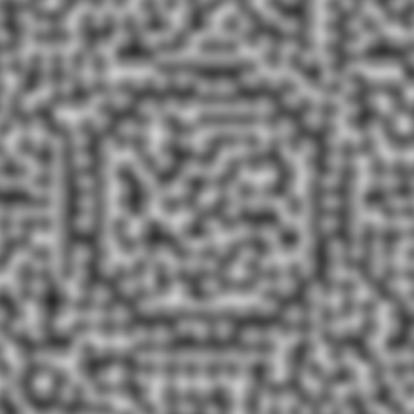

Problem Summary
Perlin Noise is an extremely common method for producing naturally appearing “random” behaviors. One of its most common applications is for generating naturally occurring textures, such as wood or grass, but can also be used to generate animations, landscapes, voumetric objects (clouds), effects (fire) and deformations. Perlin noise can be easily generated for any kind of dimension making it such that applications of noise in one dimension can be similarly applied in another. However one major drawback to this method is an inability to control properties of the generated noise, making it difficult for an exterior agent, like a user, to force a certain pattern or form. The critical problem this project solves is developing a method in which a user can specify the general form of a 3D terrain created with Perlin noise such mountains, hills, plains, caves and valleys and the outputted terrain would follow the given specification while still being considered “natural looking”. One application of being able to generate terrain based on some specified form accurately is the generation of massive terrain all in one shot, rather than blending together multiple sources of noise that are generated with a variety of parameters.
An Example of procedural terrain generation in the Unity engineTo achieve this, I start with a method described in Cheng (2014) which controls Perlin Noise for the purpose of texture synthesis. I apply this method to the usecase of terrain generation and see how closely the results match the desired features and what kinds of inputs would yield specific landscapes. I then try changing the optimization algorithm and error function to see if I can produce results that are closer to what a user would expect. The originality of this projects comes from applying a method for texture synthesis into an entirely different usecase and modifying the original method with a few different techniques in hopes of producing more desirable terrains
Previous Work
The basis of this proposal is comes from the paper Cheng WC., Lin WC., Huang YJ. (2014) Controllable and Real-Time Producible Perlin Noise. The paper specifies a way to control the value of the perlin noise function following some user specification through an optimization process. Texture generation is the main application of their method, producing reasonable results. This paper sites Yoon, J., Lee, I.: Stable and controllable noise. Graphical Models 70, 105–115 (2008) which has a similar approach.
There has been a variety of work on generating procedural terrain. These techniques usually rely on some source of noise and have parameters which can be tuned to provide specific visual properties. Olsen, J. (2004). Realtime Procedural Terrain Generation gives an overview of a variety of methods which can produce randomly generated terrain in real time. Doran, Jonathon, and Ian Parberry. Controlled Procedural Terrain Generation Using Software Agents presents a method for controlling procedurally generated terrain but doesn’t utilize Perlin noise.
Description of Work
I started with implementing a Perlin noise texture generator. Given a width, height and grid, the program creates a texture based upon the algorithm stated in Improved Perlin Noise. The program first generates a random list of unit vectors, each of which is associated with a point on the given grid. These points are then used to interpolate the noise value at each pixel, yielding a synthesized noise texture.
Perlin Noise with Linear Interpolation Perlin Noise with Quintic Interpolation as shown in Improved Perlin NoiseI then developed an application that rendered terrain based on a specified texture. Given an image, the program generates geometry by using the texture as a heightmap. Geometry is generated by going along the image and taking each pixel to be the height of a vertex at that point. With decent lighting the generated terrain looks to be believable, which was expected.
The noise from above rendered Closer renderThe method described in Cheng (2014) controls Perlin noise by optimizing a nonlinear objective function of the gradient field used in the noise.
The objective function is a measure of how much error exists within a current configuration of gradient vectors compared to the desired vector field. There are two components: a uniformity term and control term.
Objective FunctionThe first term (uniformity) keeps the “natural looking” property of Perlin noise by trying to maintain the uniformity of the distribution of gradient vectors. The term is directly based off the Kolmogorov–Smirnov test which is a nonparametric test for the equality of distributions. In this case, the term measures the maximum difference between the cumulative uniform distribution of gradient vectors and the empirical distribution of the generated gradient vectors.
Kolmogorov-Smirnov (KS) goodness of fit test Example of the maximum difference between distributions
Example of the maximum difference between distributions
If the vectors were indeed chosen uniformly at random, then the difference between the distribution would be zero. For my optimization, minimizing this term keeps the “natural looking” feel of the noise at each iteration. Since there was no specification for representing either of these distributions, I based it off of a vector's angle from the positive x axis. The cumulative distribution function of a probability function is the probability a value will be either less than or equal to itself. In the case of a uniform distribution, this is linear. The probability that a randomly chosen vector will have an angle of pi or less than pi is 50% since it’s half of all possible angles around a circle. I used the comparison of this CDF with the distribution of the current gradient vectors to find the KS term
The second term (Control) is for fitting the noise to the user’s inputted specification. It is the sum of the squared differences of the current noise to the ideal noise desired by the user. For positions where the user does not specify any specific noise value, they are ignored in the calculation of this value. This term becomes drastically larger the more points are specified by the user.
Control TermFor this method, the user specified noise by using an image. A pixel specified the value the noise should be at that position. Not all pixels have to represent noise values.
There is an assoicated weight for how much each term influences the total error. In the paper .995 and .005 are used for each weight respectively
Cheng (2014) states they use simulated annealing as the optimization method to converge to the desired gradient vector field. Simulated annealing is a probabilistic optimization algorithm for approximating to the global minimum of a function. At each step a new state is calculated by chosing some "neighbor" from the previous state and the difference in error is calculated between these two states. If the new state has less error than the old state, then the neighboring state is taken to be the current state in the next iteration. However if the current state has a lower cost than the new state, there is a chance that the algorithm might select the higher error cost to avoid local minimums. The probability to accept the higher cost state decreases as the optimization continues, eventually converging on the global minimum.
 Simulated Annleaing in action. Taken from Wikipedia
Simulated Annleaing in action. Taken from Wikipedia
Cheng (2014) unforutnately does not state how the neighboring vector field was chosen at each iteration, so I had to institute my own methods for the neighbor selection process. The method I found which gave the most reasonable results was jiggling the angle of each vector slightly at each iteration and evaluating the objective function to see if the overall error had decreased. Using this neighbor selection, the error eventually decreased for all inputs I tried, leading to reasonable looking results.
Dead Ends
I changed various aspects of the described methods to try and produce faster, lower error, higher quality, controlled terrains. Most of these methods resulted in nothing worthy
Within the objective function, I changed the control term to be the sum of the absolute value of the difference rather than the sum of the difference squared. This had no noticable positive effect. I also varied the weights to give the control term more influence over the error. There were no meaningful differences in the noise generated when the weight of the control term was kept to be fairly low. Increasing the weight of the control term made the outputted terrain look more organized, which is expected since the uniformity term isn't being weighted as heavily.
For the optimization technique, I tried two different methods in hopes of better results. Firstly I tried optimizing a lower resolution gradient field first, and then feeding the optimized values here to a higher resolution field and repeated until sufficently large. This method seemed to have no effect on the output but I am unsure if my implementation is correct. I also tried implementing a genetic algorithm for the optimization to try an achieve better results. At each step I took multiple vector fields and calculated the error of each field. I then generated new vector fields by crossing over the vector fields with the smallest error, and did this process over multiple iterations. This algorithm converges extremely slowly but produces output similar to simulated annealing.
Results
The main method I instituted for optimization took an extremely long time (5 to 10 minutes), no where close to real time application. The noise it did generate, if the pattern was simple enough, did look similar to the inputted values and generated similaily looking terrain when rendered as a heightmap
Input Image Output Perlin Noise Generated Terrain CloserFor instance in this example, the inputted black circle image states that the noise which falls into the black circle region should be 0, or the minimum possible value. The expected terrain should be something like a basin and although the actual terrain somewhat resembles a basin, the interior of the basin has many regular bumps and then a few irregular bumps near the center
Two more examples
Input Image  Output Perlin Noise Generated Terrain Closer look at the circle boundary Input Image Output Perlin Noise Generated Terrain Closer look at one of the barsAnalysis of Work
New Results
Utilizing the original method in the paper led to results of terrain that looked quite close to the inputted image. However most modifications of the algorithm, such as modifying the error function or optimization method, did not yield better or faster results.
Meeting Goals
I will address each one of my goals that I stated in my proposal
- Somehow acquire the papers mentioned and read up on them. (Unfortunately I can’t find any free way to get them) Also research how uncontrolled perlin noise has been applied to terrain.
- Create a 2D and 3D Perlin Noise generator with no control. This will involve implementing the method stated in the Improved Perlin Noise paper.
- Write a renderer to view the Perlin Noise by either interpreting it as a heightmap or the terrain itself. The renderer will use OpenGL and rasterization and should have a camera that can be used to pan around the generated terrain. If rasterization doesn’t go well ray tracing will be used instead.
- Implement the method specified in the above papers to control the noise and try inputting certain images to see if the outputted noise matches what the papers specify.
- Expand the control to not only take in images but also other formats such as coordinates or patterns to determine terrain.
- Analyze generated terrain, is it acceptable? What parameters can be tuned? Are there other methods a user can specify control?
- If all goes well, this method could be applied to other applications, such as controlled fire effects or controlled deformations.
- Additionally a graphical user interface could be created to manipulate how the terrain should be generated by the user
The journals the papers I specified in the proposal were not accessible through A & M’s network so I purchased one of them. The usage of Perlin noise for terrain generation is extensively documentated which made it easy to research.
I was able to successively implement Perlin Noise and confirm the differences of different interpolation functions.
Able to successfully create a renderer using rasterization and shaders for rendering the noise as a heightmap
Implemented the paper to the best of my abilities but had to decide upon many critical parts of their algorithm with my own methods, so I am unsure if my implementation is as effective as what they showcased
I experimented with being able to enter coordinates of a shape and filling in the interior with the same noise values. This gave the results one would expect with a given image
Outputted terrain generally had the look of the user’s specifications but not the intended effect. I tried changing the weighting of the optimization and optimization methods but found it did not have the desired effect. The best inputs were ones where the inputted image had thick outlines of the desired shape.
Due to not all going well, I did not have the time to try applying this method to other applications.
Unfortunately due to long duration of the optimization, a graphical user interface to manipulate terrain did not seem to be reasonable for the project and was put as a last priority. Due to time constraints I did not get a chance to implement it
Future Work
There is large room for improvement in the optimization method itself. Finding a more accurate objective function or determining a direction of decent during the optimization could help tremenously in accurately converging to the correct solution quickly. Another solution could lie within finding a better method of chosing a neighboring gradient vector field during simmulated annleaing. Both of the optimization methods I implemented are no where near real time speeds. Becoming faster could lead to more realistic applications of this technique, such as being a tool for artists to use in world building.
The general approach could also be applied to 3D Perlin Noise and be tested to see how accurately terrain generated with 3D noise matches a user inputted model. Currently I model my distribution of angles around the unit circle, which is only possible since it is constrained in 2D. The distribution would have to be adapted to 3D in order to try apply the same error function.